Evidencias de impacto real: más de tres décadas ejecutando vivienda de interés social, infraestructura educativa, microcrédito y desarrollo comunitario en Colombia.
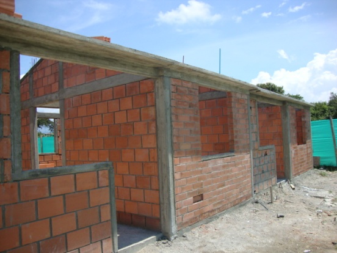
ViviendaProyecto emblemático de vivienda de interés social por su impacto territorial y número de soluciones habitacionales construidas en Cartago.
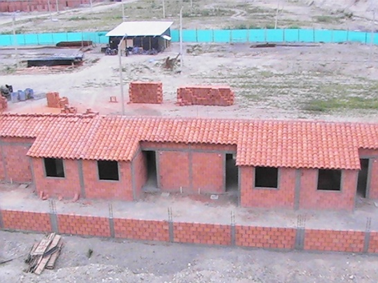
ViviendaDesarrollo urbano planificado con mampostería resistente, servicios públicos y espacios de convivencia comunitaria.
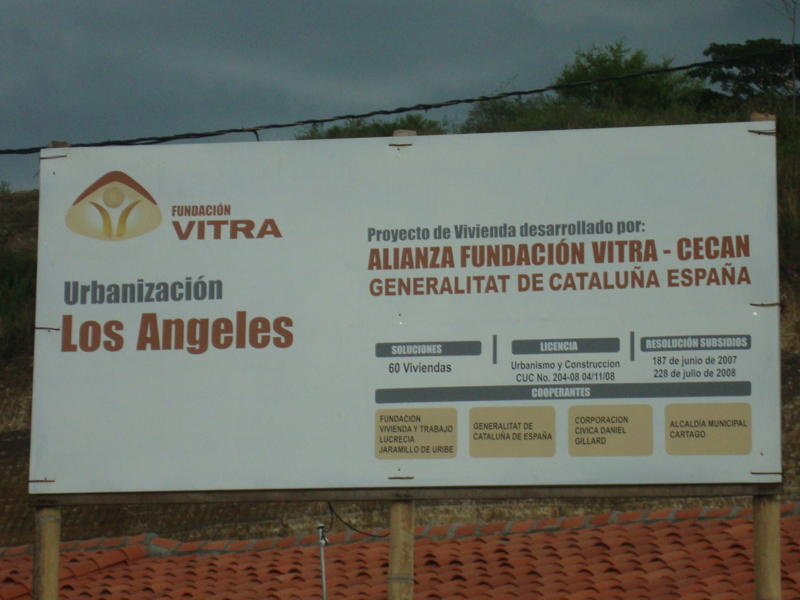
ViviendaConstrucción integral de hábitat y trazado urbanístico que fortaleció el tejido barrial en el municipio de Cartago.
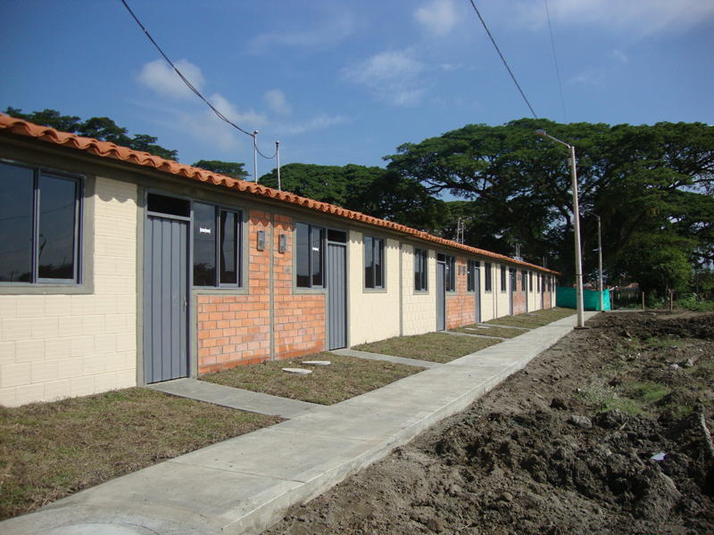
ViviendaViviendas seguras y confortables entregadas a familias beneficiarias de programas sociales de la Fundación VITRA.
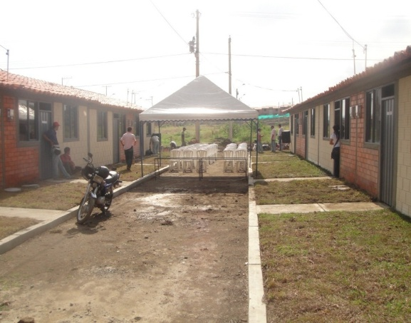
ViviendaInfraestructura habitacional de interés social con altos estándares de calidad técnica y calidez humana.
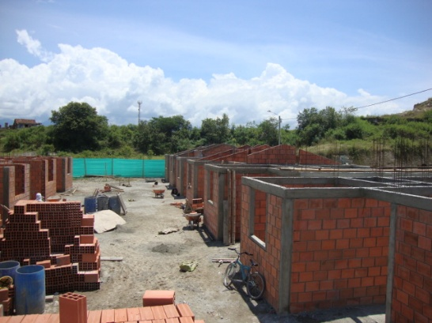
ViviendaEspacio residencial consolidado que representa el compromiso histórico de VITRA con la vivienda digna.
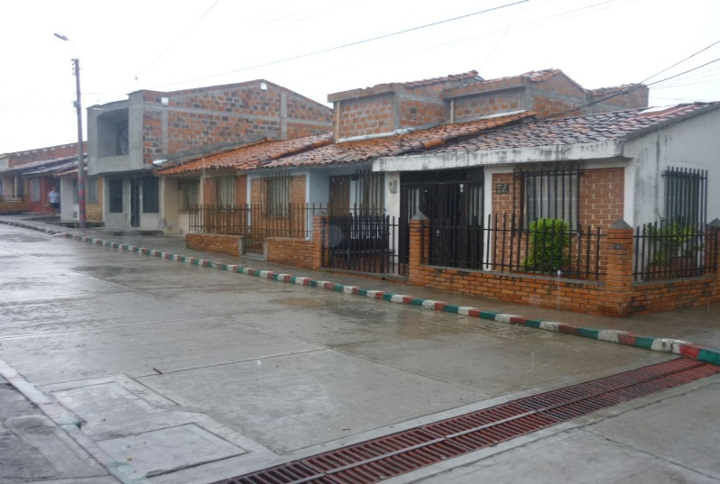
ViviendaDesarrollo habitacional prioritario que transformó la vida de 78 familias de Cartago, brindándoles techo propio y estabilidad.
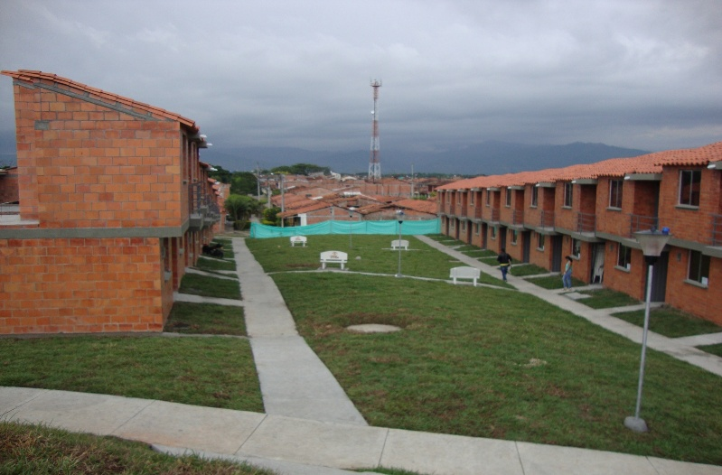
ViviendaProyecto de vivienda de interés social desarrollado en Cartago con enfoque en comunidad, salubridad y espacio familiar.
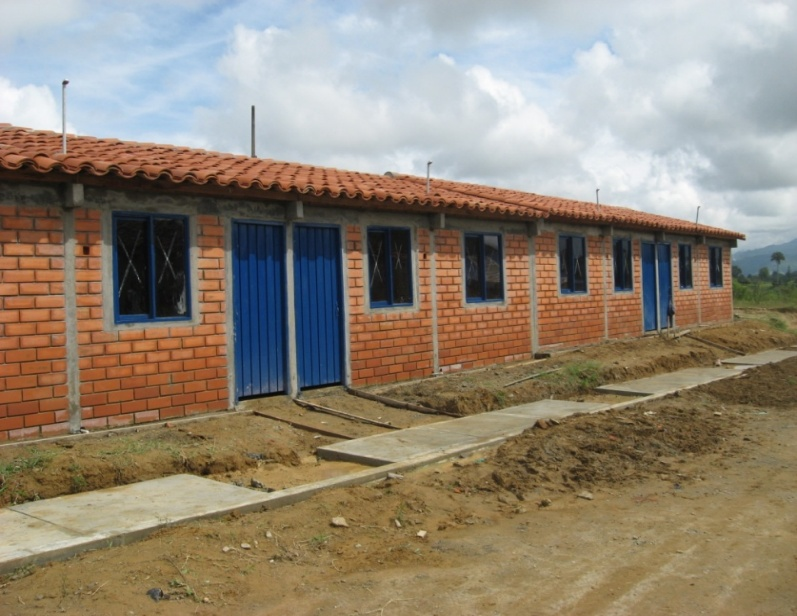
ViviendaConstrucción de soluciones habitacionales en el municipio de Caicedonia en alianza con entidades de cooperación.
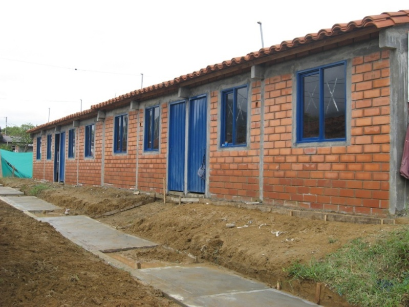
ViviendaDesarrollo de vivienda social y mejoramiento del entorno residencial en Caicedonia, Valle del Cauca.
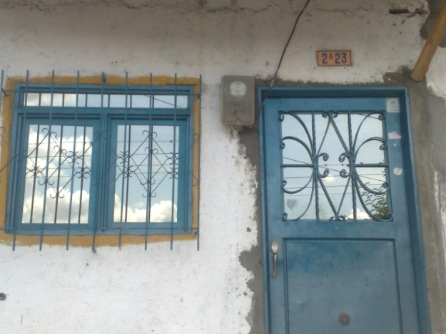
ViviendaIntervenciones técnicas de adecuación habitacional, saneamiento básico, refuerzo de techos y pisos en municipios del Norte del Valle.
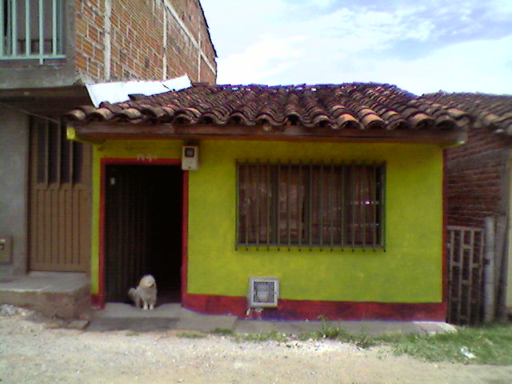
ViviendaObras de optimización física de hogares para reducir el déficit cualitativo de vivienda en zonas vulnerables.
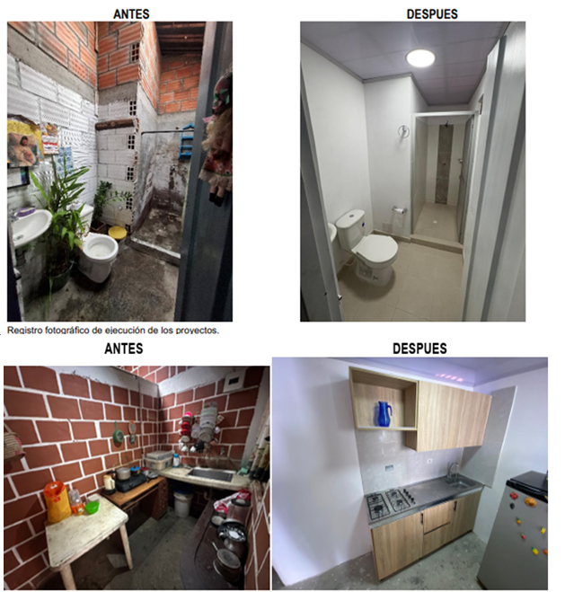
EmergenciaDiagnóstico estructural, apoyo humanitario y obras de reconstrucción de techos y viviendas afectadas por terremotos en Cartago y Norte del Valle.
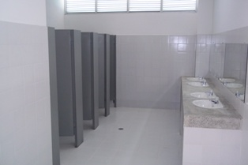
EducaciónMejoramiento de infraestructura educativa en el Instituto Técnico Agrícola de Buga, optimizando aulas y bienestar estudiantil.
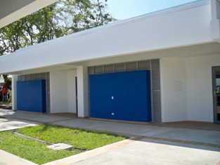
EducaciónAdecuación de áreas pedagógicas y pasillos institucionales para la comunidad educativa de Buga.
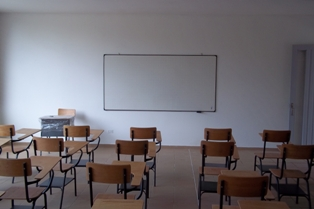
EducaciónObras de adecuación física y mejoramiento en la sede Augusto Ricaurte del municipio de Bugalagrande.
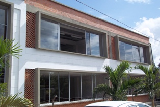
EducaciónModernización de espacios escolares para brindar mejores condiciones de aprendizaje a niños y jóvenes.
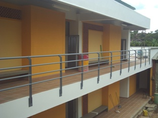
EducaciónIntervención locativa y adecuación de aulas en la Institución Educativa San Pío X del municipio de La Cumbre.
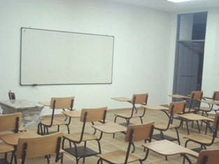
EducaciónMantenimiento estructural y mejoramiento de las condiciones de seguridad en las instalaciones escolares.
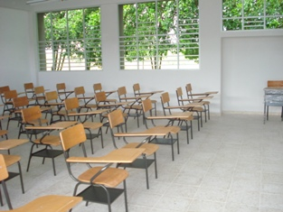
EducaciónAdecuación de aulas y baterías sanitarias en la Institución Educativa Holguín Garcés de Cartago.
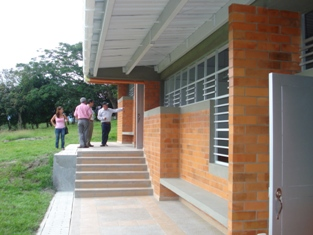
EducaciónObras de mantenimiento locativo que benefician a cientos de estudiantes de la comunidad cartagüeña.
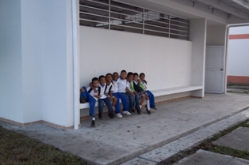
EducaciónObras de mejoramiento en talleres y aulas de la sede técnica del emblemático colegio Indalecio Penilla de Cartago.
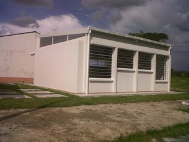
EducaciónAdecuación estructural y mantenimiento en los ambientes formativos de la institución técnica.
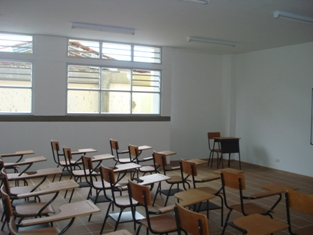
EducaciónRehabilitación de salones de clase y espacios recreativos en la sede Antonio Nariño de Cartago.
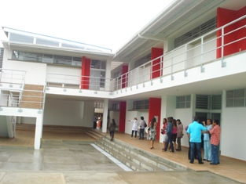
EducaciónMejoramiento de las condiciones de salubridad y confort térmico en ambientes de aprendizaje.
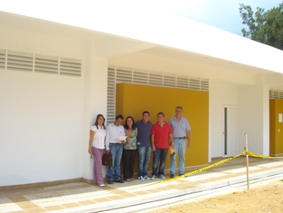
EducaciónIntervención en infraestructura escolar para la comunidad de Calima El Darién, Valle del Cauca.
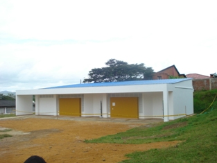
EducaciónAdecuación de áreas formativas y mantenimiento general de cubiertas y muros escolares.
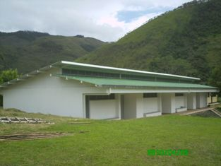
EducaciónMejoramiento de infraestructura en escuela rural del municipio de Bolívar, Valle.
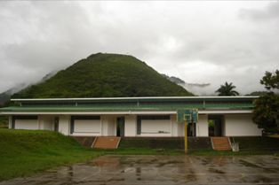
EducaciónAdecuaciones locativas para brindar un espacio digno y seguro a los niños del sector campesino.
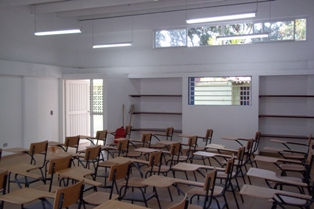
EducaciónConstrucción y mejoramiento de instalaciones físicas en la sede Augusto Domínguez de Guacarí.
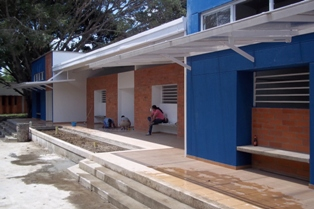
EducaciónAdecuación de aulas y servicios esenciales para la formación de los estudiantes de Guacarí.
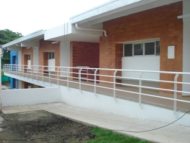
EducaciónMantenimiento y mejoramiento locativo en la sede Manuela Beltrán del municipio de Guacarí.
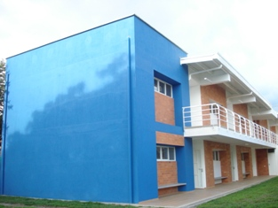
EducaciónRenovación de espacios escolares para garantizar el derecho a una educación en condiciones dignas.
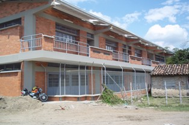
EducaciónOptimización de infraestructura institucional en la sede principal del municipio de Jamundí.
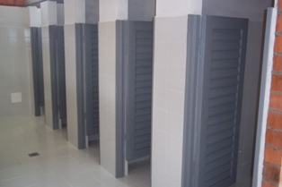
EducaciónObras de adecuación en baterías sanitarias y espacios de bienestar estudiantil en Jamundí.
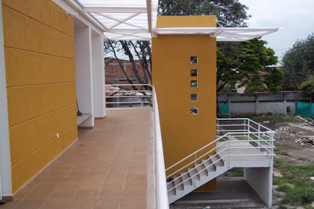
EducaciónIntervenciones de mejoramiento de cubiertas y espacios de formación en el municipio de Vijes, Valle.
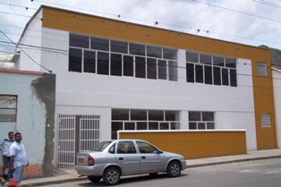
EducaciónAdecuación integral de aulas pedagógicas en la sede Policarpa Salavarrieta de Vijes.
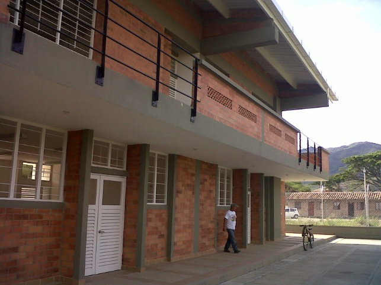
EducaciónAdecuaciones de infraestructura y bienestar para la comunidad estudiantil de Toro, Valle del Cauca.
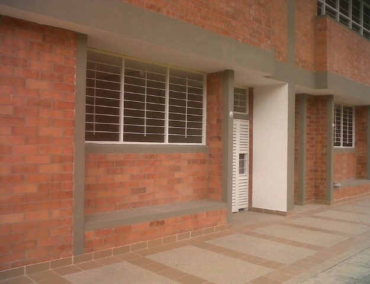
EducaciónObras de embellecimiento y mantenimiento estructural en los salones y pasillos del plantel en Toro.
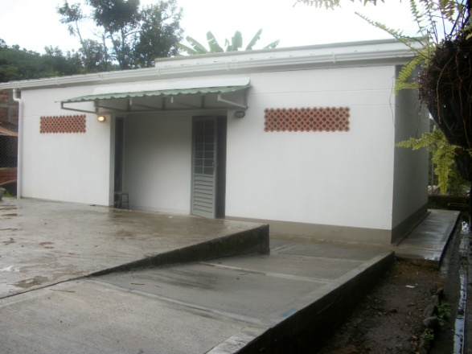
EducaciónMejoramiento de ambientes escolares y seguridad física en la sede rural Venecia de Trujillo, Valle.
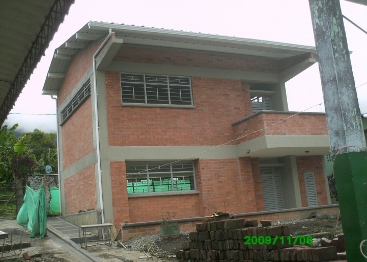
EducaciónRenovación de espacios escolares para optimizar el proceso formativo en zonas campesinas.
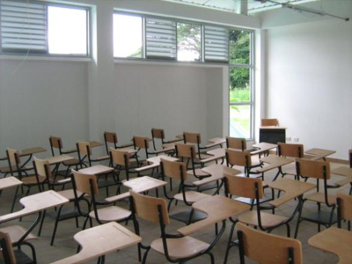
EducaciónObras de adecuación física y embellecimiento en la Institución Educativa Primitivo Crespo de Riofrío.
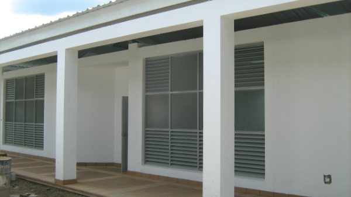
EducaciónIntervenciones de mantenimiento preventivo y optimización de espacios escolares en Riofrío.
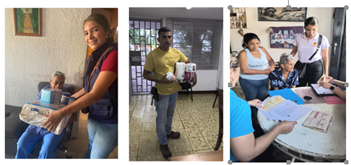
MicrocréditoProgramas de financiación solidaria y fomento del empleo para dinamizar la economía local y fortalecer pequeños negocios.
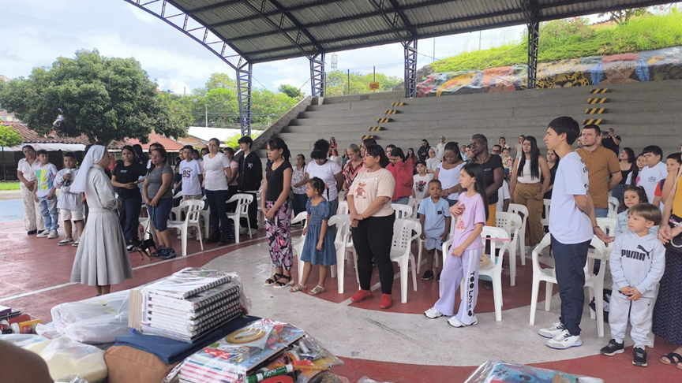
EmprendimientoTalleres de formación técnica, formulación de proyectos y comercialización para familias emprendedoras.
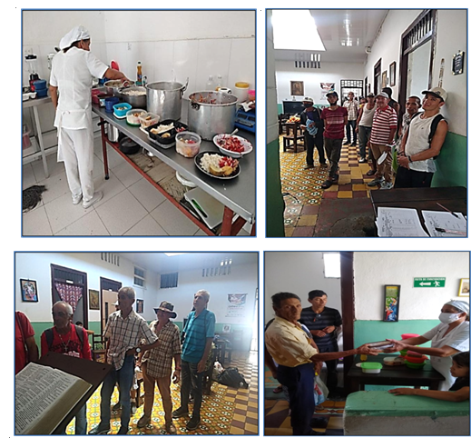
AsociatividadAcompañamiento a redes de comercio popular y fortalecimiento del cooperativismo en sectores vulnerables.
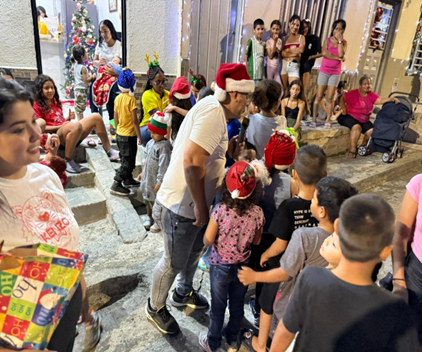
ComunitarioProgramas de apoyo social, acompañamiento a familias y adultos mayores, y articulación comunitaria.
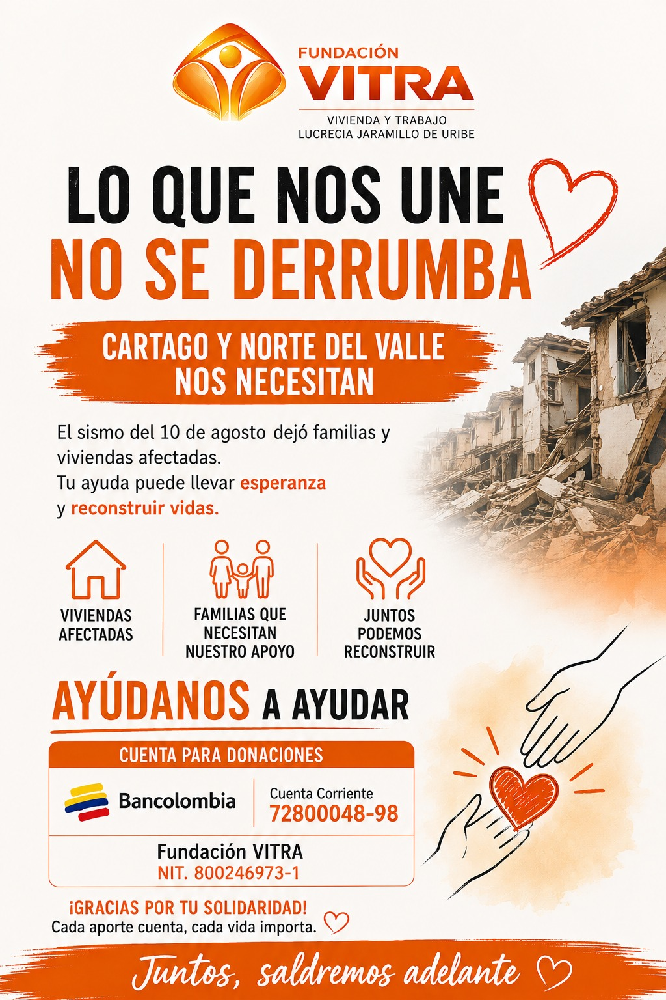
TerritorioJornadas integrales de apoyo y gestión con las familias beneficiarias de los programas de la Fundación VITRA.
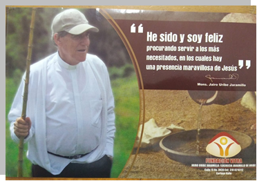
FundadorHomenaje a nuestro fundador visionario, quien en 1990 inició en Cartago la misión de brindar vivienda y trabajo digno a los más necesitados.
 Inclusión
Inclusión
Talleres formales e interactivos de Lengua de Señas Colombiana en convenio con asociaciones de PCD con reconocimiento nacional.
 Turismo
Turismo
Diseño, señalética interpretativa y capacitación comunitaria para rutas turísticas y patrimoniales que activan la economía local.
 Sostenibilidad
Sostenibilidad
Huertas orgánicas familiares, cosecha de aguas pluviales y seguridad alimentaria para comunidades campesinas.
Descripción detallada del proyecto y resultados obtenidos.